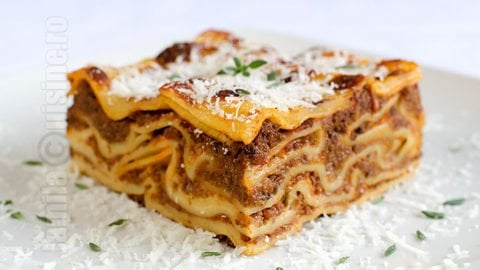

Lasagna

Description
An easy recipe for one of the best italian dishes!
Ingredients
- 0.5kg/1.1 pound ground beef and pork (each).
- ricotta, mozarella and parmezan cheese (quantity depend on how cheesy you want it to be. I used 4 big mozarella balls, 300gr/10.5 ounce of ricotta and about 200gr/7 ounce of parmezan)
- 2 onions>
- 2 carrots
- lasagna sheets or fresh pasta
- 2 cans of crushed tomatoes (in my case, this is about 300gr/10.5 ounce per can)
- some celery (I hate celery, so I use 2 stalks only)
- basil
- red wine
- garlic, salt, pepper, oil and bay leaf
Steps
- I always start by preparing all vegetables: Cut onions into small pieces, carrots into quarters; I cut celery into very big pieces so I can take them out later. If you like celery, you can cut it into small pieces.
- Add a little oil to a pot and add your ground meat. We are rendering the fat.
- Once meat is gray in color, turn off heat and drain the liquids into container, we will use this later.
- With a bit of fat still in pot, add your onion, carrot, celery and squeeze two or three cloves of garlic through squeezer.
- Fry vegetables until they give nice smell and create fond on bottom of the pot.
- Add about 200ml/6.7 ounces (i honestly never measure) red wine to the pot and scrub bottom to deglaze.
- Allow wine to boil for a bit to evaporate alcohol, and add back your meat to pot.
- Add the liquid from the meat, two cans of crushed tomatoes and a little bit of water to the pot (I usually add enough to clean the can of the tomatoes). You can also add chicken or beef broth if you have.
- Add basil, 2 teaspoons of salt, 1 teaspoon sugar and a bit of ground pepper. (you can also add some chilli flakes or oil to make sauce bit more spicy)
- Let this boil with closed lid, then open lid and let pot simmer for half hour.
- Make sure to taste the sauce.
- Optional - take out celery from the sauce.
Assembly
- Put layer of sauce on bottom of your dish.
- Put 1 layer of your sheets of lasagna on top.
- Put layer of sauce on top of the lasagna sheets.
- Put a mixture of your cheeses (tear mozarella balls into smaller pieces, ricotta with a spoon and shredded parmezan).
- Repeat step 2 - 4 until you are out of sauce.
- Make sure (I did not have enough cheese when I did this) to have a bunch of shredded parmezan on top of the lasagna, so it forms a "lid" when it melts.
- Shove this into preheated oven at 180C/356F for 40 minutes.
Important - Let lasagna rest a bit when you take it out of the oven before you serve.